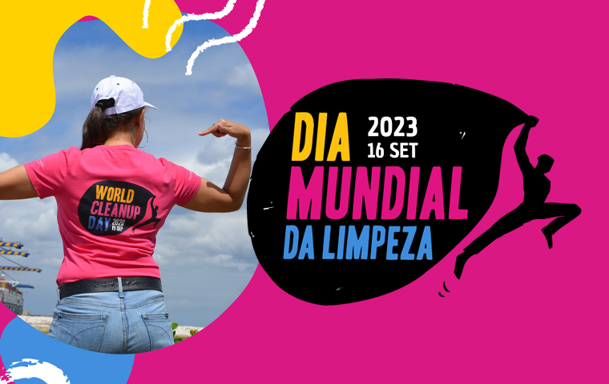
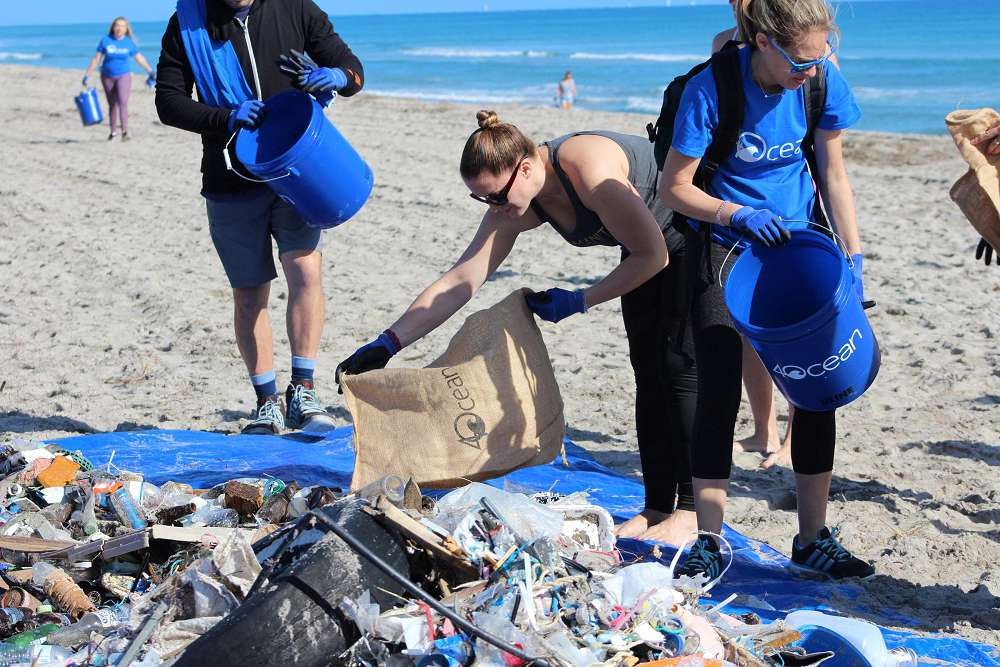
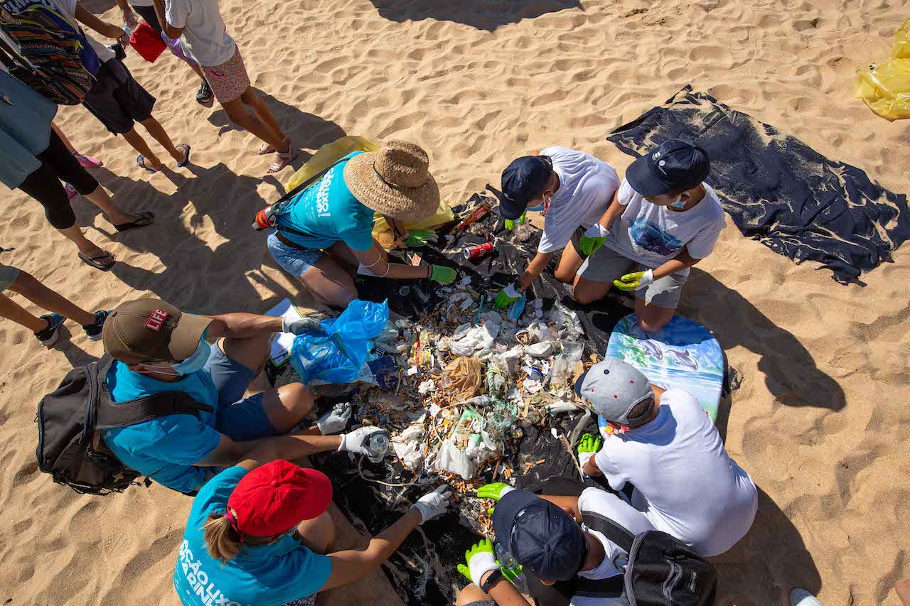

Redução de Plasticos
O primeiro passo para reduzir esse problema é eliminar os plásticos de uso único, como canudos, sacolas e embalagens descartáveis. Países como o Canadá e a União Europeia já proibiram vários desses itens, resultando em redução significativa da poluição costeira. No dia a dia, podemos substituí-los por alternativas reutilizáveis, como ecobags, garrafas de aço e recipientes de vidro. Pequenas mudanças individuais, quando multiplicadas, têm grande impacto.
A reciclagem adequada também é crucial, mas apenas 9% de todo plástico produzido no mundo é reciclado. Muitos resíduos acabam em rios e, posteriormente, no oceano devido ao descarte incorreto. Separar o lixo corretamente e apoiar cooperativas de reciclagem ajuda a diminuir esse fluxo. Além disso, pressionar empresas a usarem embalagens biodegradáveis e governos a melhorarem a gestão de resíduos é essencial para uma solução em larga escala.
Mutirões de limpeza de praias são ações práticas que qualquer pessoa pode participar. Projetos como o "World Cleanup Day" mobilizam milhões de voluntários globalmente para coletar plásticos antes que cheguem ao mar. No Brasil, iniciativas como "Limpeza dos Mares" mostram como a sociedade civil pode fazer a diferença. Essas ações não só removem poluentes, mas também conscientizam a população sobre o problema.

Fonte Disponível em: Worldcleanupday
.jpeg)
Fonte Disponível em: Opovo
A educação infantil é outra ferramenta poderosa. Escolas e famílias podem ensinar crianças sobre os impactos do plástico nos oceanos através de atividades lúdicas, como jogos de reciclagem e visitas a aquários. Quando as novas gerações entendem a importância dos oceanos, elas se tornam adultos mais conscientes e responsáveis. Programas como o "Blue Schools" da UNESCO já trabalham nessa frente em vários países.
Apesar dos desafios, há esperança. Tecnologias inovadoras, como barcos coletores de lixo e bactérias que decompõem plástico, estão sendo desenvolvidas. Enquanto isso, cada pessoa pode contribuir reduzindo seu consumo de plástico, participando de ações locais e exigindo políticas públicas eficazes. O oceano não é um depósito infinito – precisamos agir agora para garantir sua saúde no futuro.
Proteger a Vida Marinha
Uma das soluções mais eficazes é a criação de áreas marinhas protegidas (AMPs), onde a pesca e a exploração são restritas. Atualmente, apenas 7% dos oceanos estão protegidos, mas a meta da ONU é expandir para 30% até 2030. Locais como o Parque Nacional Marinho de Abrolhos (BA) mostram como a proteção pode recuperar populações de peixes e corais. Apoiar a expansão dessas áreas é crucial para a conservação.
Consumo consciente de frutos do mar também faz diferença. Espécies como o atum-azul e o tubarão estão em risco devido à demanda excessiva. Aplicativos como o "Seafood Watch" ajudam a identificar quais peixes são sustentáveis para consumo. Evitar espécies ameaçadas e preferir pescados com certificação MSC (Marine Stewardship Council) reduz a pressão sobre os estoques pesqueiros.
A poluição química (como óleo, metais pesados e pesticidas) é outra grande ameaça. Vazamentos de petróleo, como o que atingiu o Nordeste brasileiro em 2019, matam milhares de animais e levam anos para serem limpos. Reduzir o uso de produtos tóxicos em casa (como detergentes com fosfato) e apoiar leis mais rígidas contra descargas industriais são formas de combater esse problema.
Turismo sustentável é outra frente importante. Mergulhadores e banhistas devem evitar tocar em corais ou alimentar peixes, ações que perturbam ecossistemas frágeis. Destinos como Fernando de Noronha limitam o número de visitantes para preservar a vida marinha um modelo que deveria ser replicado em outras regiões.
A ciência cidadã permite que qualquer pessoa contribua com a proteção marinha. Projetos como o "Meros do Brasil" convidam mergulhadores a registrar avistamentos de peixes ameaçados, ajudando em pesquisas. Quanto mais pessoas se envolverem, maior será a pressão por mudanças políticas e empresariais em prol dos oceanos.
Redução dos Gases Poluentes
Reduzir a pegada de carbono é essencial para proteger os oceanos. Pequenas ações como usar transporte público, consumir menos carne e optar por energias renováveis diminuem as emissões de CO₂. Cidades costeiras também devem investir em infraestrutura verde, como manguezais e recifes artificiais, que absorvem carbono e protegem contra erosão.
A energia eólica offshore é uma alternativa limpa que reduz a dependência de combustíveis fósseis. Países como Dinamarca e Reino Unido já têm parques eólicos marinhos que geram eletricidade sem poluir. No Brasil, esse potencial ainda é pouco explorado, mas projetos piloto no Nordeste mostram que a tecnologia pode ser adaptada às nossas condições.
Restaurar ecossistemas costeiros é outra solução. Manguezais, ervas marinhas e marismas sequestram até 5 vezes mais carbono que florestas tropicais. Programas como o "Mangue Vivo" no Espírito Santo replantam essas áreas, beneficiando tanto o clima quanto a biodiversidade. Apoiar essas iniciativas é fundamental para mitigar as mudanças climáticas.

Fonte Disponível em: radioaltominho

Fonte Disponível em: wilder
A pressão por políticas públicas também faz diferença. Acordos como o Tratado Global dos Oceanos (2023) buscam regular atividades em alto-mar, mas precisam ser implementados com rigor. Votar em candidatos comprometidos com a agenda ambiental e cobrar ações concretas dos governos acelera as mudanças necessárias.
Embora os desafios sejam grandes, soluções inovadoras trazem esperança. Desde corais resistentes ao calor desenvolvidos em laboratório até barcos movidos a hidrogênio, a ciência trabalha para reverter os danos. Enquanto isso, cada pessoa pode ser parte da solução, adotando hábitos sustentáveis e exigindo um futuro mais saudável para os oceanos.
Os oceanos, que cobrem 71% do planeta e regulam o clima, a produção de oxigênio e a alimentação de bilhões de pessoas, estão em crise devido à poluição, sobrepesca e mudanças climáticas mas ainda há esperança. Cada ação conta: desde reduzir plásticos no dia a dia e escolher pescados sustentáveis até apoiar políticas de conservação e participar de mutirões de limpeza. A mudança começa com a conscientização de que proteger os mares não é apenas uma questão ambiental, mas de sobrevivência humana. Se agirmos agora, com ciência, educação e cooperação global, podemos reverter parte dos danos e garantir que as futuras gerações herdem um oceano vivo, resiliente e capaz de continuar sustentando a vida na Terra. O tempo é curto, mas a maré ainda pode mudar a nosso favor.
Videos Relacionados a Leitura
Dia Mundia da Limpeza
Dia mundial da limpeza nos oceanos
Dia Mundia dos Oceanos
Campanha para limpeza de mares